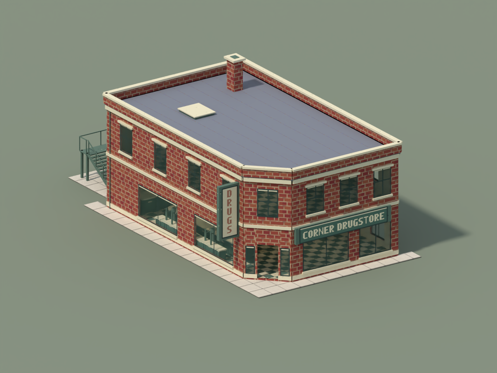
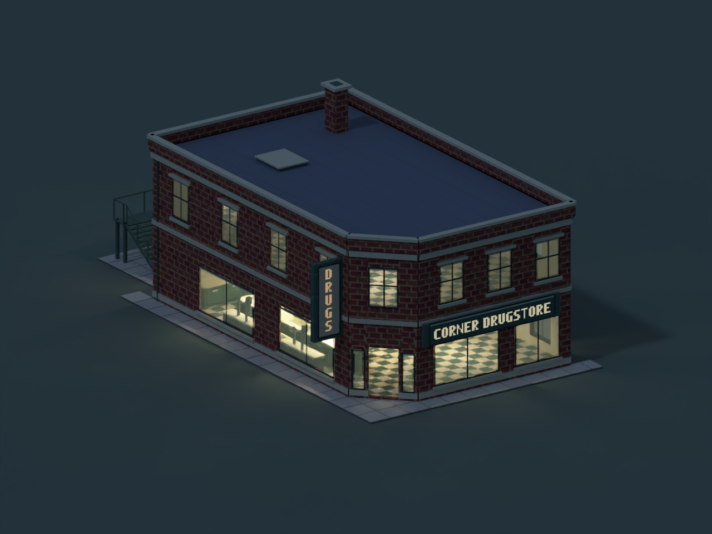
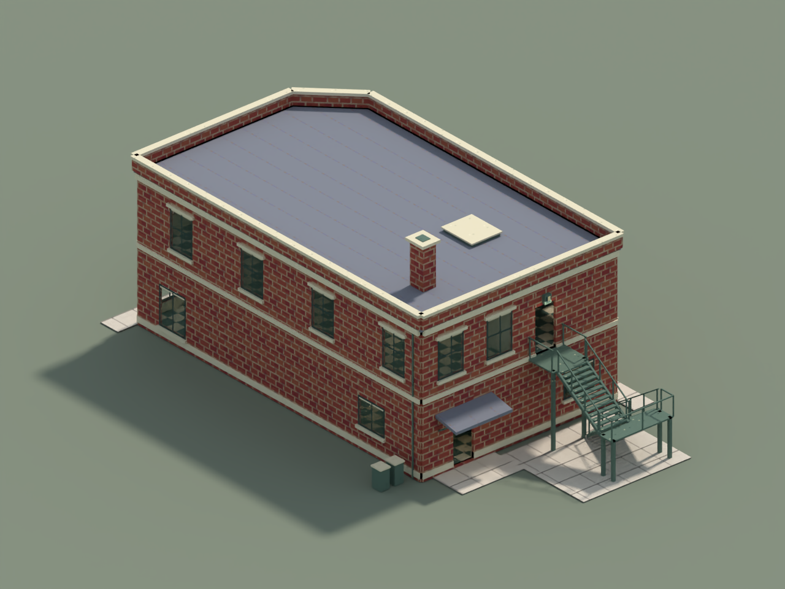
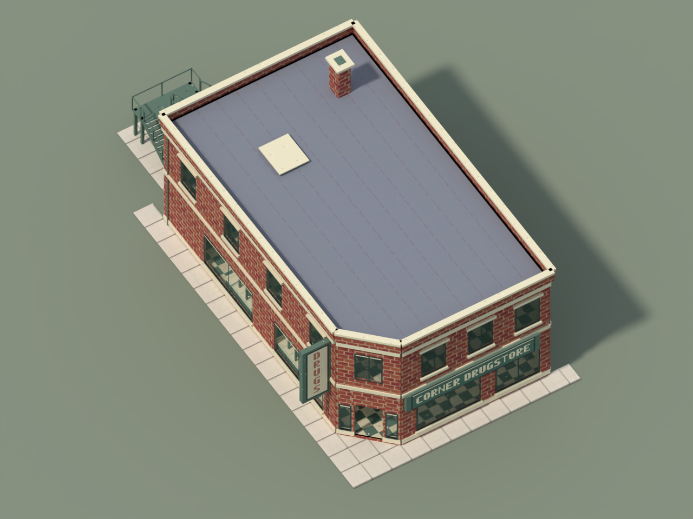
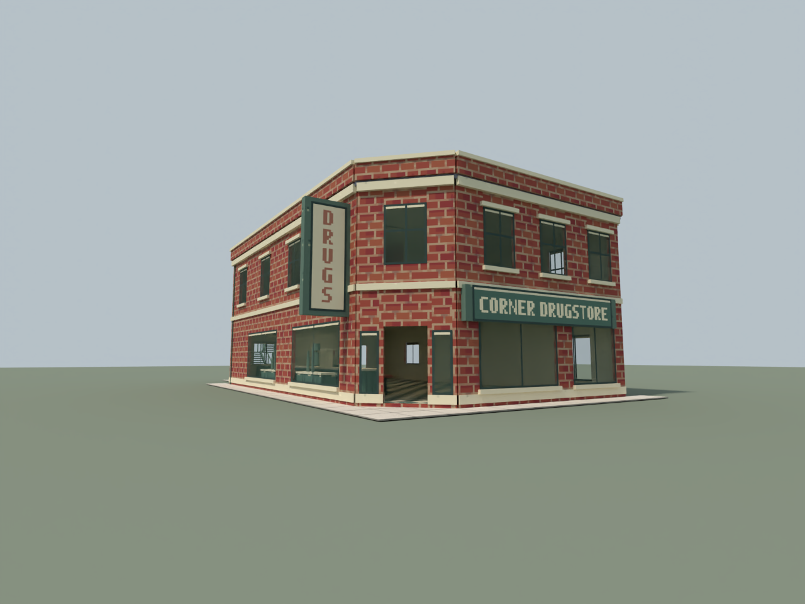
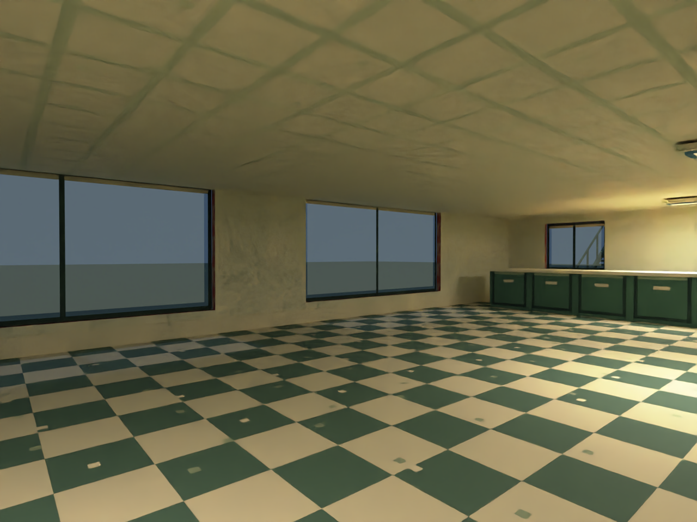
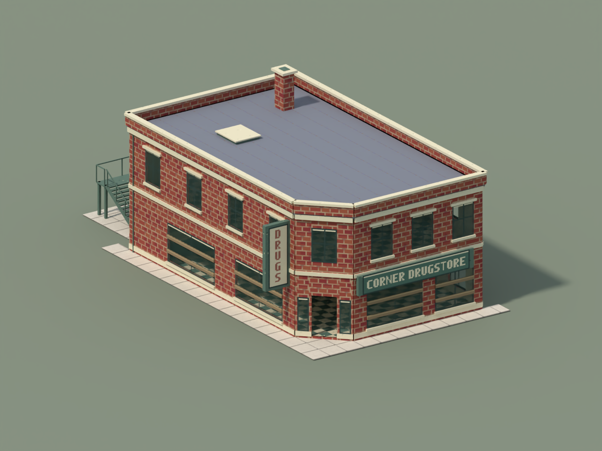
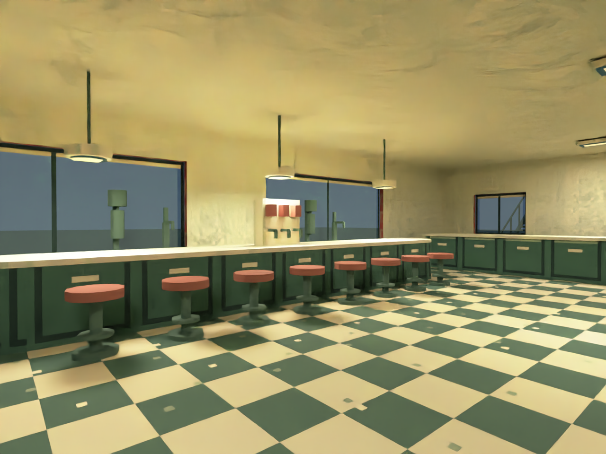
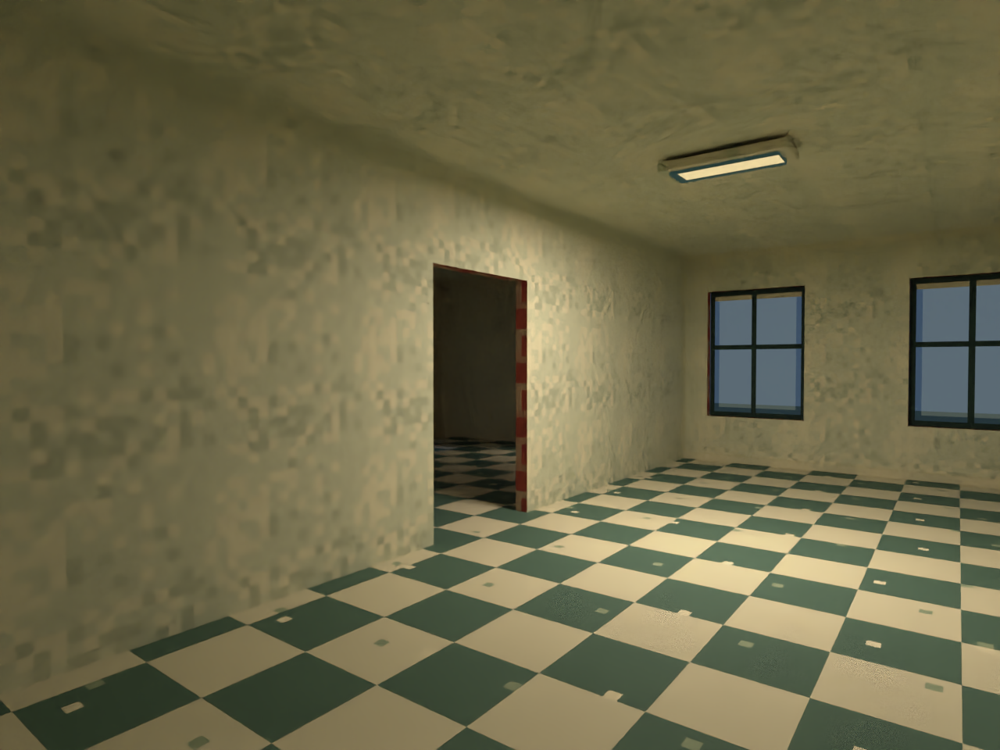

Corner Drugstore & Soda Fountain
A complete brick corner shell with diagonal entrance, projecting trade sign, upper offices and a rear exterior stair. Four GLBs provide the family fountain, later retail conversion, closed shop and cafe reuse alternatives. State choice and recovery of the old counter must follow actual simulation facts. These are Blender desktop previews; game navigation, lighting, collision parsing and furnishings remain integration work.

Chamfered corner, display fronts and projecting sign
Pane-only glass and sign lighting
Service side and outside upper-office staircase
Complete roof, parapet and rear stair structure
Diagonal open entrance from street levelFamily fountain: counter, fixed stools and dispensers
1976–2005: fountain removed and ceiling lowered
2006 onward: closed visual alternative
2006 onward: cafe reusing the original counter
Unfurnished upper office shellsCafe storefront: reused shell and repainted signs